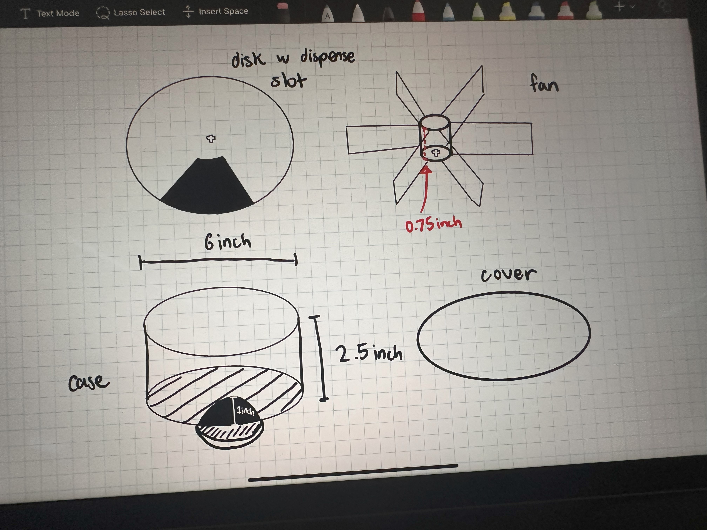
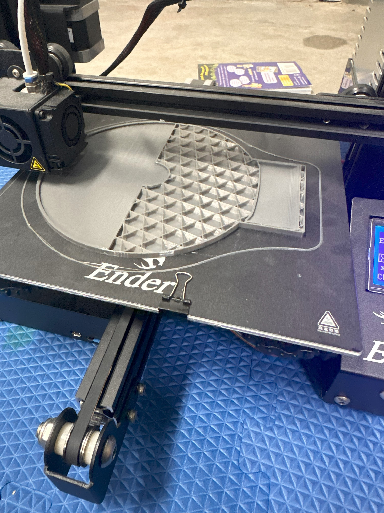
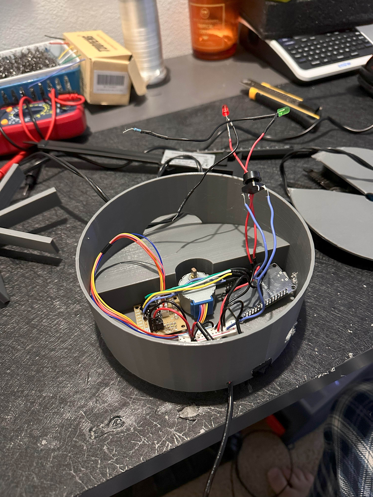

A wirelessly-controllable pill dispenser with an ESP32 brain, a Firebase-synced companion web app, and a working dispense tray — the cure for forgetting whether I took my meds this morning.
I had trouble keeping a consistent medication and supplement routine — the kind of thing where you find yourself at 11 PM wondering whether you already took your meds that day. I built this to take the decision out of it entirely.
On a scheduled timer the dispenser rotates an internal compartment and drops the correct dose into a retrievable tray, lighting an LED to flag a pending pickup. Every dispense event is written to Firebase, so a companion web app can show intake history, trigger ad-hoc dispenses remotely, and keep a streak going.


